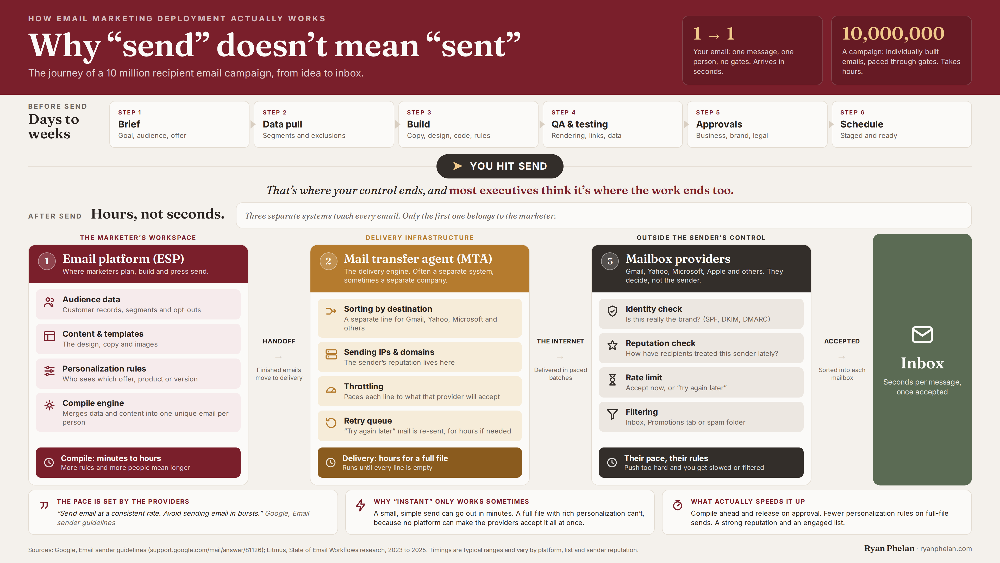

Writing · Original
You don’t control delivery. You earn it.
What a ten million person email send taught me about positioning.
A friend of mine runs email for a big brand. Smart, good at her job. She called last week a little frustrated, because a campaign to millions of people was taking hours to go out, and the people around her assumed “send” meant “done.” Hit the button, it’s gone, so why isn’t it finished.
So I did what I always do for executives that are far removed from infrastructure. Make a picture of how it works!
Here’s the part nobody upstairs ever sees. Before you hit send, there are six steps: the brief, the data pull, the build, QA, approvals, the schedule. Days of work, sometimes weeks. And after you hit send, there are three separate systems, and only the first one is yours.
Your platform builds the message and compiles it, one unique email per person. Then a delivery engine takes over and hands it off to the internet in paced batches. And then the mailbox providers, Gmail, Yahoo, Microsoft, Apple, decide whether to accept it. They check your identity. They check your reputation. They set the rate. They filter. At their pace, by their rules, not yours.
That is why a quick note to one person lands in seconds, but a full campaign to millions cannot. It is not that your platform is slow. No platform can make the providers accept ten million messages at once. The pace is not yours to set.
An example of the Clarity Gap inside one workflow: everything a team does to send a single campaign, and how little of it the business ever sees.

She said it was the first time the whole thing fit in one picture. Then she said the part that stuck with me: “I’m sending this to my boss.”
That’s when it clicked, again, that this isn’t really a story about email.
Watch what happens after “send.” You control your platform. You do not control whether the message lands and don’t even get me started on what “tab” it goes in. Two of the three systems belong to someone else, and the ones that decide are the ones you don’t own. Push too hard, send in bursts, try to force volume through, and you don’t get speed. You get throttled and filtered. Reputation and relevance decide, not effort.
Now say that sentence again, but about your company.
You control your story. The deck, the website, the internal narrative, the way you describe what you do. That’s your platform. But you do not control whether the market accepts it. The analysts, the search results, the review sites, the competitor open in the next tab, and the buyer’s existing beliefs, those are your mailbox providers. They decide whether your positioning lands, on their terms, based on your reputation and how relevant you actually are to them. And when a company’s answer to a soft market is to say the same thing louder, more content, more campaigns, more noise, it gets the positioning version of a burst send. Filtered, not accepted.
I’ve watched this up close. A company is certain it sells outcomes. Its buyers are certain it sells software. Same company, two different stories, and the space between them is where deals stall, where the sales cycle drags, where marketing keeps making more and converting less. Nobody is lying. The internal story and the market’s experience quietly drifted apart, and no one was measuring the distance.
The inbox is the market. Email just makes the gap easy to see, because you can measure it. The distance between “we hit send” and “it actually landed” is the same distance I spend my time on now: how a company understands itself, versus how the market experiences it.
I call that the Clarity Gap. Most companies don’t have a volume problem or an effort problem. The work is happening. Teams are shipping. The trouble is that almost nobody outside the team can see it clearly, so it gets underestimated inside the building and misread outside it. It looks like nothing until it looks like a problem.
Here’s the uncomfortable part, and it’s the same lesson deliverability has beaten into me over the years: you cannot force acceptance. Not from a mailbox provider, not from a market. You earn it. You earn it with a reputation that holds up, a message that is actually relevant to the person on the other end, and the patience to stop shouting and start being understood.
The brands that win the inbox are boring about it. Consistent sending, clean lists, a real reason to show up. The brands that win a market are boring in the same way. They pick a clear story and they make it true, over and over, until the market stops arguing with it.
“Send” is a button. “Sent” is three companies deciding whether to let you. Your positioning works the same way. The teams doing the work aren’t the problem. The gap between that work and what everyone outside can see is.
That gap is the whole job. It’s the one I help close.